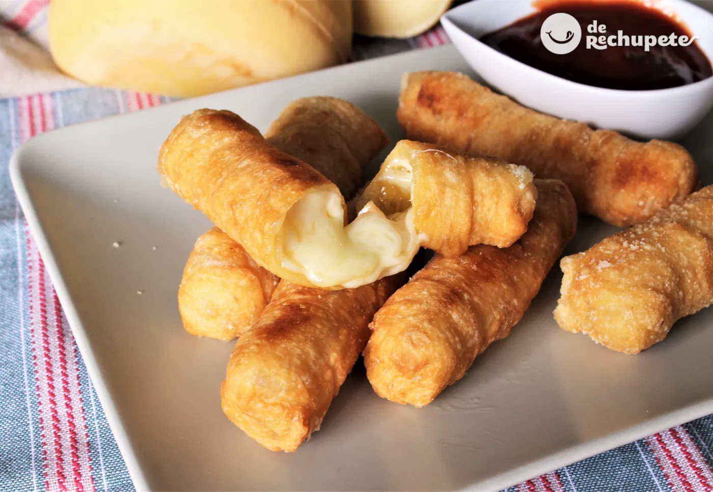

As certain food can bring back memories, that's what Tequeños does towards me
I think if you really want to enjoy and give it a try you cannot miss the experience and include a malta
a popular drink, sweet and barley doesn't have any alcohol